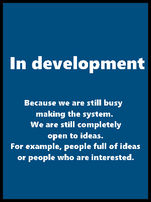
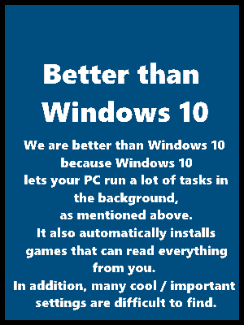

<!--I know this is'nt a hard code to whrite and its easy to understand, thats because i am not an advanced HTML/CSS/JS developer. I know just the basics of HTML and CSS.-->
<!DOCTYPE HTML>
<html>
<head>

	<link rel="icon" href="images/icon.ico" type="images/x-icon"/>
	<meta http-equiv="Content-Type" content="text/html; charset=utf-8">
	<link href="styles/styleOne.css" rel="stylesheet" type="text/css">
	<script src="/js/html5shiv.js"></script>

<title>Home | OSIS</title>

</head>

</html>

<body>
	
	
	<ul>
		<li><a class="nl" href="Homepage.html">Home</a></li>
		<li><a href="updates.html">Updates</a></li>
		<li><a href="staffteam.html">Staff Team</a></li>
	</ul>
	<div class="osisbg">
	</div>
		<div class="what_is_osis">
			<h3>About OsisOS</h3>
			I started to make it because I realized that Windows 10 is actually pretty bad. For example, it does the following things with your computer:<br>
			<br>
			&nbsp;&nbsp;&nbsp;&nbsp;- It runs a lot of tasks in the background that are unnecessary, your PC will only get slower.<br>
			&nbsp;&nbsp;&nbsp;&nbsp;- It automatically installs bad games that all information can read from you. However, if you remove these games again, they will be back after about 2 updates of Windows 10.<br>
			<br>
			I also make this because it seems very nice to me and I want to make it a nice community! Do you join?

	<h2 id="wayuo">Why should you use OSIS?</h2>
	<li class="pluspoints"></li>
	<li class="pluspoints1"></li>
	<li class="pluspoints2"></li>

	

</body>

</html>